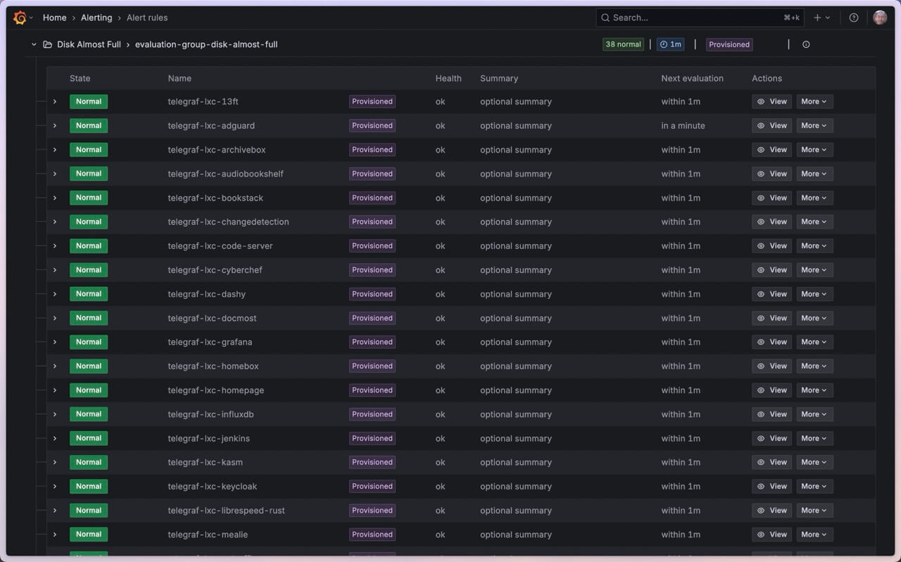
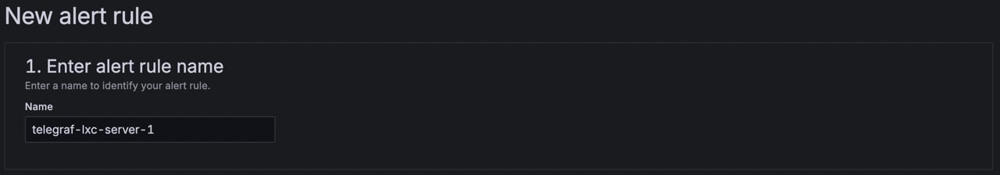
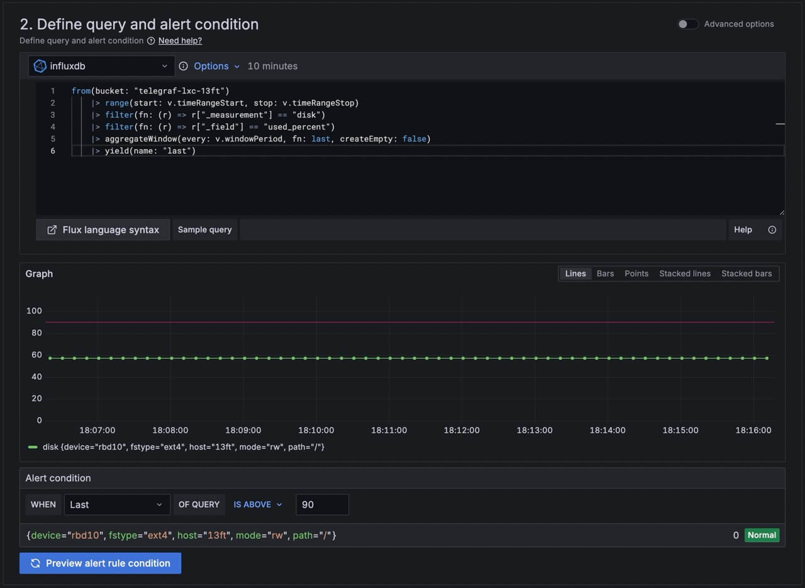
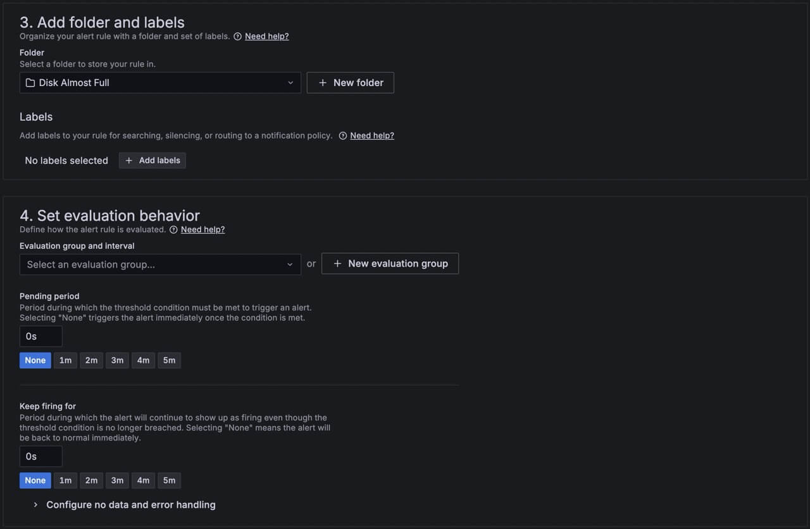
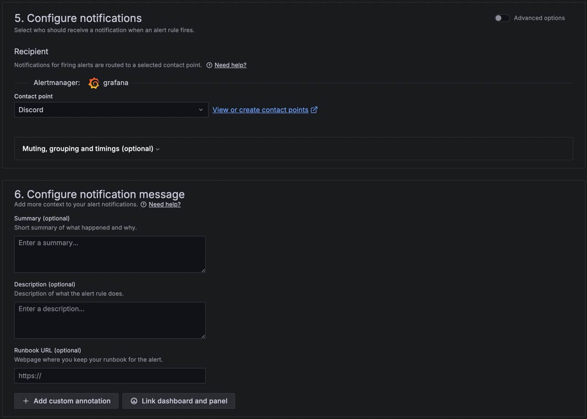

Alert Me on Disk Full (Telegraf + InfluxDB + Grafana)
Problem
I have about 40 linux containers running, and I want to be notified when any of them are close to maxing out its disk space.
Solution
I’ve decided to use the (Telegraf + Influx + Grafana) stack again. Previously, I’ve used it for alerting me on high temperatures.
So here goes configuring another 40 plus linux containers…
Look how beautiful my alerts are :)

ToC
This article assumes you have already set up and are familiar with InfluxDB and Grafana.
For each linux container, we would do the following steps:
Or we can do the automated route:
1. InfluxDB
In the InfluxDB web console, create:
2. Telegraf
Download the Telegraf binary from their GitHub release page.
The telegraf.conf is simple because we will be just monitoring the root disk (make sure to replace those values below!):
[global_tags]
[agent]
interval = "10s"
round_interval = true
metric_batch_size = 1000
metric_buffer_limit = 10000
collection_jitter = "0s"
flush_interval = "10s"
flush_jitter = "0s"
precision = "0s"
[[inputs.disk]]
mount_points = ["/"]
[[outputs.influxdb_v2]]
urls = ["$INFLUXDB_URL_HERE"]
organization = "$INFLUXDB_ORG_NAME_HERE"
bucket = "$INFLUXDB_BUCKET_NAME_HERE"
token = "$INFLUXDB_API_TOKEN_HERE"
Run telegraf with this configuration:
telegraf -config telegraf.conf
Verify in InfluxDB Web UI that metrics are being received.
3. Grafana
Here we will be creating an alert for a single linux container.
Let’s create a new rule:




Automate for 40 Linux Containers
Now doing the same 3 steps above for 40 times is too much. I’m lazy. So I’ve written a script to automate all of this.
Here it is in Github: https://github.com/TheRealMarcusChiu/proxmox-scripts
Auto Telegraf & InfluxDB
To install Telegraf on all your Linux containers,
and auto create buckets on InfluxDB,
create a file proxmox-server-setup-lxcs.sh in your proxmox server:
#!/bin/bash
INFLUXDB_URL="REPLACE_ME"
INFLUXDB_API_TOKEN="REPLACE_ME"
INFLUXDB_ORG_ID="REPLACE_ME"
INFLUXDB_ORG_NAME="REPLACE_ME"
INFLUXDB_BUCKET_NAME_PREFIX="telegraf-lxc-"
pct list | grep running | while read line; do
ID=$(echo "$line" | awk '{print $1}')
NAME=$(echo "$line" | awk '{print $3}')
INFLUXDB_BUCKET_NAME="$INFLUXDB_BUCKET_NAME_PREFIX$NAME"
# Create telegraf bucket
curl -X POST "$INFLUXDB_URL/api/v2/buckets" \
-H "Authorization: Token $INFLUXDB_API_TOKEN" \
-H "Content-type: application/json" \
-d "{
\"name\": \"$INFLUXDB_BUCKET_NAME\",
\"orgID\": \"$INFLUXDB_ORG_ID\",
\"retentionRules\": [{
\"type\": \"expire\",
\"everySeconds\": 604800
}]
}"
echo "Updating container: $ID $NAME"
pct exec $ID -- bash -c "apt update && apt-get update && apt install git -y"
pct exec $ID -- bash -c "git clone https://github.com/TheRealMarcusChiu/proxmox-scripts.git"
pct exec $ID -- bash -c "cd /root/proxmox-scripts && git pull"
pct exec $ID -- bash -c "export INFLUXDB_URL=\"$INFLUXDB_URL\" && export INFLUXDB_API_TOKEN=\"$INFLUXDB_API_TOKEN\" && export INFLUXDB_ORG_NAME=\"$INFLUXDB_ORG_NAME\" && export INFLUXDB_BUCKET_NAME=\"$INFLUXDB_BUCKET_NAME\" && cd /root/proxmox-scripts/telegraf && /root/proxmox-scripts/telegraf/setup.sh > /root/proxmox-scripts/telegraf/log.txt"
pct exec $ID -- bash -c "systemctl show -p SubState,ActiveState,Result telegraf > /root/proxmox-scripts/telegraf/output.txt"
echo "Finished updating container: $ID $NAME"
done
Make it executable, then execute it:
chmod +x proxmox-server-setup-lxcs.sh
./proxmox-server-setup-lxcs.sh
Auto Grafana
To auto create alert rules on Grafana, create the following Python file create-grafana-alert-group.py:
import hashlib
header = """apiVersion: 1
groups:
- orgId: 1
name: evaluation-group-disk-almost-full
folder: Disk Almost Full
interval: 1m
rules:
"""
alert_rule_template = """ - uid: ALERT_UID_HERE
title: BUCKET_NAME_HERE
condition: C
data:
- refId: A
relativeTimeRange:
from: 60
to: 0
datasourceUid: deu40om3f7xfkc
model:
intervalMs: 1000
maxDataPoints: 43200
query: |-
from(bucket: "BUCKET_NAME_HERE")
|> range(start: v.timeRangeStart, stop: v.timeRangeStop)
|> filter(fn: (r) => r["_measurement"] == "disk")
|> filter(fn: (r) => r["_field"] == "used_percent")
|> aggregateWindow(every: v.windowPeriod, fn: last, createEmpty: false)
|> yield(name: "last")
refId: A
- refId: B
datasourceUid: __expr__
model:
conditions:
- evaluator:
params: []
type: gt
operator:
type: and
query:
params:
- B
reducer:
params: []
type: last
type: query
datasource:
type: __expr__
uid: __expr__
expression: A
intervalMs: 1000
maxDataPoints: 43200
reducer: last
refId: B
type: reduce
- refId: C
datasourceUid: __expr__
model:
conditions:
- evaluator:
params:
- 90
type: gt
operator:
type: and
query:
params:
- C
reducer:
params: []
type: last
type: query
datasource:
type: __expr__
uid: __expr__
expression: B
intervalMs: 1000
maxDataPoints: 43200
refId: C
type: threshold
noDataState: NoData
execErrState: Error
annotations:
description: optional description
summary: optional summary
isPaused: false
notification_settings:
receiver: Discord
"""
bucket_names = [
"telegraf-lxc-13ft",
"telegraf-lxc-adguard"
]
with open("disk-almost-full.yaml", "w") as file:
file.write(header)
for bucket_name in bucket_names:
hashed = hashlib.sha256(bucket_name.encode()).hexdigest()
short_hash = hashed[:14]
new_text = alert_rule_template.replace("ALERT_UID_HERE", short_hash, 1)
new_text = new_text.replace("BUCKET_NAME_HERE", bucket_name, 2)
file.write(new_text)
In this file, modify bucket_names accordingly.
Run this:
python create-grafana-alert-group.py
This should output a file disk-almost-full.yaml.
Now in the Grafana server, put this file under /etc/grafana/provisioning/alerting/disk-almost-full.yaml.
Then restart the grafana server:
systemctl restart grafana-server
This will auto provision the alert rules accordingly. Verify on Grafana console UI.
Optional Delete the Alert Rules
Create a python file create-grafana-alert-group-deletion.py:
import hashlib
header = """apiVersion: 1
deleteRules:
"""
alert_rule_template = """ - orgId: 1
uid: ALERT_UID_HERE
"""
bucket_names = [
"telegraf-lxc-13ft",
"telegraf-lxc-adguard"
]
with open("disk-almost-full-deletion.yaml", "w") as file:
file.write(header)
for bucket_name in bucket_names:
hashed = hashlib.sha256(bucket_name.encode()).hexdigest()
short_hash = hashed[:14]
new_text = alert_rule_template.replace("ALERT_UID_HERE", short_hash, 1)
file.write(new_text)
In this file, modify bucket_names accordingly.
Run this:
python create-grafana-alert-group-deletion.py
This should output a file disk-almost-full-deletion.yaml.
Now in the Grafana server, put this file under /etc/grafana/provisioning/alerting/disk-almost-full-deletion.yaml
while removing the other one.
Then restart the grafana server:
systemctl restart grafana-server
This will delete all the auto provisioned alert rules. Verify on Grafana console UI.